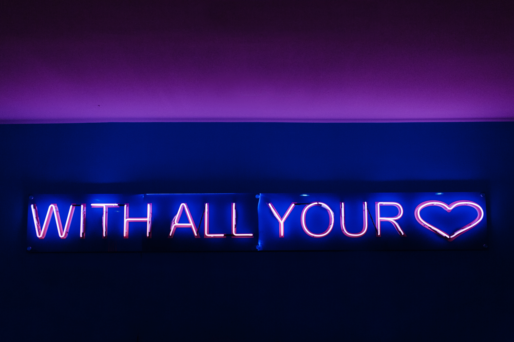

Don't miss out on this important skill ;) fri, July 07
Imagine yourself in these 3 situations
-
Stuck in the traffic

-
Your coworker missed the deadline for the project

-
Your 2-year-old is throwing a temper tantrum

Now what is that one emotion that you might feel?
Now go back again and think,
Is it because of the situation or because we lack patience?
इन दिनों I have realized that it is not the lack of respect, but the lack of patience that is disturbing relationships. 
What else is disturbing?
Delays 
But delay is good at some point as “The greatest remedy for anger is delay”. 
Coming back to where we started- Patience is the capacity to tolerate delay, difficulty or annoyance without getting upset or angry.
Life is in fact full circle, what you give is what you get.
So what to give?
Flowers 
Chocolates
Time 
Love 
Respect 

Photo by Brittney Burnett on Unsplash
Remember it’s not the lack of respect, it’s the lack of patience. Full circle. 
Have a beautiful weekend 
Love,
Walkover